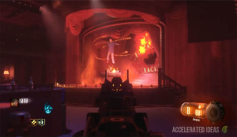

Shadows of Evil:
Step 1 - Complete the Rituals
Shadows of Evil contains 4 Rituals, that can only be started by collecting the following items:
- The Summoning Key
- Cops Badge
- Toupee
- Championship Belt
- Lawyers Pen

Shadows of Evil contains 4 Rituals, that can only be started by collecting the following items:
Once you have all four Gateworms you can enter the Rift to find Pack-a-Punch. There is a convenient Rift portal in the Canal (at water level, just drop down into the water). You need to enter Beast mode and break the door to reveal the Rift entrance. Initially, the Rift looks like a yellow light but it turns into a red portal after you activate it.
Now pass through the Rift and into a kind of "Crazy place" environment. Take note of the wall with many yellow symbols on it, stand in front of it and the bricks will fall down, revealing another chamber where the Pack-a-Punch is located.
Inside this room there are four cauldrons/fountains. Place a Gateworm in each fountain to activate the blue beam which points to the Pack-a-Punch. Use wallrun to get across the other side to activate the two fountains on the far side.
After a 20 second countdown, the Pack-a-Punch machine is unlocked and the Shadow Man appears briefly to say "Your service to the overlords is appreciated". He then turns into a tentacle beast and you've just released a gigantic tentacle monster, which you can see in the sky from outside.
Although Swords are not technically the Wonder Weapon in Shadows of Evil, they are a crucial part of the Easter Egg.
The Sword is acquired through a multi-step process that starts with the player using the Train system to take note of three unique red symbols, which can be spotted from the window while riding the train. Once you know all three symbols, you can enter the Rift and zap the matching red symbols on the wall while in Beast mode.
After this, a special chamber is revealed behind the door. Players must pick up the Egg from the throne and insert it into each of the four Octopus statues around the map, then charge each statue by killing zombies in close vicinity. Finally, the egg must be returned to the sword chamber and the player is rewarded with the sword.Note: You may want to swap this with step 1 if you're more comfortable powering the statues in the early rounds.
Now that the Rituals are complete and you have the sword, you must return to the Ritual area for your particular character. For example, if you're the boxer you must go to the Boxing ring. As soon as you enter the room, you'll notice a white ghostly figure by the summoning area. Approach the ghost and pick up the Arch-Ovum item (the egg).
Now go to the four different locations one by one (Canal, Waterfront etc.) and place the Ovum on the floor. A bright red circle will appearand you have to kill the Margwas that spawn in each of these locations.
Once you have completed all four, return to the ghost to claim the upgraded sword.
First, visit Nero's library (Easy Street ritual area) and go to the bookcase. Walk up to the book on the floor and press the action button. It should float up and hover in mid-air. This is essential to make the flag spawn into the subway.
Next, go to the underground subway which can be reached from either a Rift or from the Junction area; take the steps down to the canal's water and immediately turn left into the subway. The flag is in the middle of the subway room (shown in image above).
Take the flag outside and plant it in a similar place where you planted the egg from the sword step. Protect the flag by killing any zombies, rolling meatballs and flying enemies. If the flag gets destroyed (because it took too much damage) then you'll need to repeat this step again. As you protect the flag it will start to glow until eventually the step is complete.
Return the flag to the Ghost character in the Ritual area. The flag will shoot a purple beam at the Ghost who will then disappear, leaving behind a power-up.
Complete the current round and another flag will spawn into the subway. Repeat steps 5 and 6 to pickup, protect and give the flag back to a different ritual ghost. Do this for every character, i.e. 3 more times because there are 4 characters in Shadows of Evil.
Note: I strongly recommend you call in the Civil Protector to follow you around for this part of the Easter Egg, especially if you're playing SOLO.
The next step of the Easter Egg requires you to take on and kill the Shadow Man. This takes place in the Pack-a-Punch room. Before you go to the cave ensure that you are happy with your weapons and perks because there's no turning back.
Upon entering the PaP cave you should see the four ghosts/witches facing the Shadow Man who is protected by a bubble. You must complete a round inside the Pack-a-Punch cave first and there is no chance of leaving the room now because the door is blocked.
Once the round is over, interact with each of the ghosts and they will fire a red beam at the Shadow Man. Do this for all four of the ghosts and the final beam will bring down the Shadow Man's protective bubble (shield).
Now shoot the Shadow Man as he changes position, until finally his shield comes back up again. Repeat the process of killing the Margwas, zombies, interacting with the ghosts to bring his shield down once again.
After the third or fourth repeat, the Shadow Man will be captured by a ritual and killed.
From this point on, we're into the co-op only part of the Easter Egg.
Immediately after killing the Shadow Man, a large Gateworm will appear briefly above the summoning table before disappearing. Zombies will stop spawning and lots of Margwas will spawn into the map instead.
White orbs will randomly appear around the map and every once in a while your screen will turn a purple colour. At this point, players must collect the white orb quickly otherwise they die.
Another big change here is that Margwa's have purple eyes now rather than yellow. That's for a good reason. Killing a Margwa will cause a purple fountain to appear that offers you an unlimited Beast mode (i.e. no timer). Margwas can hurt you now in Beast mode so staying away from them is essential.
The giant Gateworm that appeared briefly has now moved to the Junction area and is hovering above the crane. It's surrounded by three gatekeepers.
Make sure everyone understands how to enter Beast mode before moving on to the next step.
Assign a person to each of the train stations and one person to the Junction where the Gateworm is.
One person needs to call the train, forcing it to pass right through the middle of the map, hitting the giant Gateworm. This doesn't kill the worm but it gives you about 20 seconds to complete the next part.
Now quickly get all players in Beast mode. The three players in the train stations need to shock the panels (shown in image above) then the person in the Junction shocks all three of the Gatekeepers.
If done correctly a red lazer will shoot up into the sky and the ending cutscene will play. Congratulations you have completed the Shadows of Evil Easter Egg!!